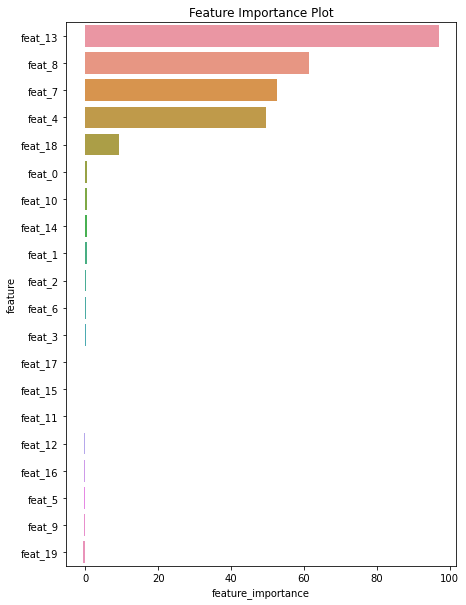
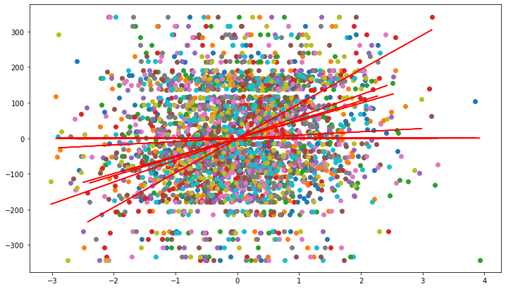
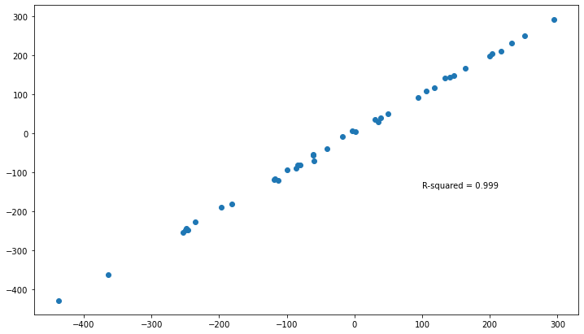

Using some of the sklearn functions in conjunction with hime estimators¶
[1]:
import os
import contextlib
import numpy as np
import pandas as pd
import seaborn as sns
import matplotlib.pyplot as plt
from sklearn.datasets import make_regression
from sklearn.metrics import r2_score
from sklearn.feature_selection import RFECV
from sklearn.model_selection import train_test_split, GridSearchCV
import session_info
[2]:
current_wd = os.getcwd()
os.chdir(current_wd.split("/notebook")[0])
from hime.linear_model import LinearRegression, LassoRegression, RidgeRegression
os.chdir(current_wd)
[3]:
session_info.show(write_req_file=False)
[3]:
Click to view session information
----- hime 0.0.1 matplotlib 3.3.4 numpy 1.19.2 pandas 1.2.3 seaborn 0.11.1 session_info 1.0.0 sklearn 0.24.1 -----
Click to view modules imported as dependencies
PIL 8.1.2 appnope 0.1.2 backcall 0.2.0 casadi 3.5.5 cffi 1.14.5 colorama 0.3.9 cycler 0.10.0 cython_runtime NA dateutil 2.8.1 decorator 4.4.2 ipykernel 5.3.4 ipython_genutils 0.2.0 ipywidgets 7.6.3 jedi 0.17.2 joblib 0.17.0 kiwisolver 1.3.1 mpl_toolkits NA parso 0.7.0 pexpect 4.8.0 pickleshare 0.7.5 pkg_resources NA prompt_toolkit 3.0.8 psutil 5.8.0 ptyprocess 0.7.0 pyexpat NA pygments 2.8.1 pyparsing 2.4.7 pytz 2021.1 repoze NA scipy 1.5.3 simplejson 3.17.5 six 1.15.0 statsmodels 0.12.2 storemagic NA swig_runtime_data4 NA tornado 6.1 traitlets 5.0.5 wcwidth 0.2.5 zc NA zmq 20.0.0
----- IPython 7.21.0 jupyter_client 6.1.7 jupyter_core 4.7.1 jupyterlab 2.2.6 notebook 6.2.0 ----- Python 3.9.2 (default, Mar 3 2021, 11:58:52) [Clang 10.0.0 ] macOS-10.16-x86_64-i386-64bit ----- Session information updated at 2021-10-21 15:00
Make X and y data¶
[4]:
amount_of_features = 20
number_infortmative = 5
X, y, coef = make_regression(n_samples=200,
n_features=amount_of_features,
n_informative=number_infortmative,
noise=5,
coef=True,
random_state=42)
[5]:
coef
[5]:
array([ 0. , 0. , 0. , 0. , 48.50179875,
0. , 0. , 51.80104314, 61.41862443, 0. ,
0. , 0. , 0. , 97.246139 , 0. ,
0. , 0. , 0. , 8.54030302, 0. ])
Fit the model¶
[6]:
df = (pd.DataFrame(X, columns=[f"feat_{x}" for x in range(0, X.shape[1])])
.merge(pd.DataFrame(y, columns=["target"]),
left_index=True,
right_index=True))
[7]:
feat_list = [f"feat_{x}" for x in range(0, X.shape[1])]
[8]:
df.head()
[8]:
| feat_0 | feat_1 | feat_2 | feat_3 | feat_4 | feat_5 | feat_6 | feat_7 | feat_8 | feat_9 | ... | feat_11 | feat_12 | feat_13 | feat_14 | feat_15 | feat_16 | feat_17 | feat_18 | feat_19 | target | |
|---|---|---|---|---|---|---|---|---|---|---|---|---|---|---|---|---|---|---|---|---|---|
| 0 | 0.020794 | -0.728003 | -1.009731 | 0.693106 | 0.200569 | -0.827590 | 0.619154 | 0.061680 | 0.428817 | -0.367028 | ... | -2.921350 | 0.903935 | -1.015822 | 0.176442 | 2.057495 | -2.362932 | -1.072139 | 1.148637 | 0.436560 | -52.239756 |
| 1 | -0.388177 | 0.170416 | -0.337086 | -1.975467 | 0.056650 | -1.209695 | -0.613403 | 0.486502 | 0.064474 | -0.144088 | ... | 1.218762 | 1.490726 | -0.070499 | -0.939335 | -0.302470 | 0.148667 | 1.530751 | 0.529693 | -0.213443 | 32.392526 |
| 2 | 1.024063 | 0.592527 | 2.006093 | 0.932591 | 0.722381 | -1.525656 | 2.061504 | -0.399636 | 0.224685 | -1.760809 | ... | 2.558199 | 0.184551 | 1.726964 | -1.418366 | 1.208366 | 1.542110 | -0.551858 | -0.372833 | -0.564248 | 190.854603 |
| 3 | 0.288694 | 0.260322 | -0.670620 | -1.027675 | -0.128538 | 0.969457 | 1.392465 | 0.092845 | 0.159856 | -0.866175 | ... | 1.775311 | 0.919154 | -0.548725 | 1.265708 | -0.250047 | 1.000582 | -0.646227 | -1.881849 | -1.193637 | -65.596294 |
| 4 | -0.359630 | 0.301107 | -0.848429 | -0.351921 | 0.874517 | -0.456121 | 0.573128 | -1.042044 | -0.487203 | -1.296117 | ... | -0.557423 | -0.926698 | -1.203201 | -0.769996 | -1.785866 | -0.031439 | 0.595029 | -0.649765 | -0.412998 | -158.517790 |
5 rows × 21 columns
[9]:
df_train = df.sample(frac=0.8, random_state=69420)
df_test = df.drop(df_train.index)
[10]:
df_train.shape, df_test.shape
[10]:
((160, 21), (40, 21))
Fit the romeo LinearRegression¶
[11]:
reg = LinearRegression(fit_intercept=True,
normalize=True).fit(X=df_train.filter(regex="feat"),
y=df_train["target"],
verbose=False)
[12]:
reg.summary_.round(4)
[12]:
| coef | std_err | t | P>|t| | [0.025 | 0.975] | |
|---|---|---|---|---|---|---|
| intercept | -0.2594 | 0.3244 | -0.7996 | 0.4253 | -0.9007 | 0.3820 |
| feat_0 | 0.5526 | 0.3356 | 1.6467 | 0.1019 | -0.1109 | 1.2161 |
| feat_1 | 0.3532 | 0.3598 | 0.9818 | 0.3279 | -0.3581 | 1.0646 |
| feat_2 | 0.1904 | 0.3036 | 0.6271 | 0.5316 | -0.4099 | 0.7906 |
| feat_3 | 0.0873 | 0.3149 | 0.2771 | 0.7821 | -0.5354 | 0.7100 |
| feat_4 | 49.5102 | 0.3575 | 138.4735 | 0.0000 | 48.8033 | 50.2172 |
| feat_5 | -0.3683 | 0.3709 | -0.9928 | 0.3225 | -1.1016 | 0.3651 |
| feat_6 | 0.1259 | 0.3140 | 0.4010 | 0.6890 | -0.4949 | 0.7467 |
| feat_7 | 52.4890 | 0.3339 | 157.2188 | 0.0000 | 51.8289 | 53.1491 |
| feat_8 | 61.3639 | 0.3095 | 198.2487 | 0.0000 | 60.7519 | 61.9758 |
| feat_9 | -0.4197 | 0.3591 | -1.1688 | 0.2445 | -1.1296 | 0.2903 |
| feat_10 | 0.5114 | 0.3124 | 1.6370 | 0.1039 | -0.1063 | 1.1292 |
| feat_11 | -0.0735 | 0.2988 | -0.2458 | 0.8062 | -0.6643 | 0.5174 |
| feat_12 | -0.2233 | 0.3241 | -0.6891 | 0.4919 | -0.8640 | 0.4174 |
| feat_13 | 96.9008 | 0.3213 | 301.6323 | 0.0000 | 96.2657 | 97.5360 |
| feat_14 | 0.4500 | 0.3170 | 1.4195 | 0.1580 | -0.1768 | 1.0769 |
| feat_15 | -0.0662 | 0.3343 | -0.1980 | 0.8433 | -0.7271 | 0.5947 |
| feat_16 | -0.2644 | 0.3270 | -0.8086 | 0.4201 | -0.9108 | 0.3821 |
| feat_17 | 0.0180 | 0.3561 | 0.0506 | 0.9597 | -0.6860 | 0.7220 |
| feat_18 | 9.2147 | 0.3195 | 28.8426 | 0.0000 | 8.5830 | 9.8464 |
| feat_19 | -0.5053 | 0.3260 | -1.5500 | 0.1234 | -1.1498 | 0.1393 |
Fit the romeo LassoRegression¶
[13]:
reg = LassoRegression(fit_intercept=True,
normalize=True).fit(X=df_train.filter(regex="feat"),
y=df_train["target"],
verbose=False)
[14]:
reg.summary_.round(4)
[14]:
| coef | std_err | t | P>|t| | [0.025 | 0.975] | |
|---|---|---|---|---|---|---|
| intercept | -0.2556 | 0.3292 | -0.7764 | 0.4388 | -0.9064 | 0.3952 |
| feat_0 | 0.5469 | 0.3405 | 1.6061 | 0.1105 | -0.1263 | 1.2202 |
| feat_1 | 0.3479 | 0.3651 | 0.9530 | 0.3423 | -0.3739 | 1.0698 |
| feat_2 | 0.1859 | 0.3081 | 0.6034 | 0.5472 | -0.4232 | 0.7950 |
| feat_3 | 0.0835 | 0.3196 | 0.2611 | 0.7944 | -0.5484 | 0.7153 |
| feat_4 | 49.5057 | 0.3628 | 136.4441 | 0.0000 | 48.7883 | 50.2230 |
| feat_5 | -0.3639 | 0.3764 | -0.9669 | 0.3353 | -1.1082 | 0.3803 |
| feat_6 | 0.1240 | 0.3186 | 0.3892 | 0.6978 | -0.5060 | 0.7540 |
| feat_7 | 52.4846 | 0.3388 | 154.9161 | 0.0000 | 51.8147 | 53.1545 |
| feat_8 | 61.3589 | 0.3141 | 195.3455 | 0.0000 | 60.7378 | 61.9799 |
| feat_9 | -0.4152 | 0.3644 | -1.1396 | 0.2564 | -1.1357 | 0.3052 |
| feat_10 | 0.5059 | 0.3170 | 1.5955 | 0.1129 | -0.1210 | 1.1327 |
| feat_11 | -0.0708 | 0.3032 | -0.2334 | 0.8158 | -0.6703 | 0.5288 |
| feat_12 | -0.2168 | 0.3288 | -0.6593 | 0.5108 | -0.8670 | 0.4334 |
| feat_13 | 96.8993 | 0.3260 | 297.2344 | 0.0000 | 96.2547 | 97.5438 |
| feat_14 | 0.4445 | 0.3217 | 1.3815 | 0.1694 | -0.1917 | 1.0806 |
| feat_15 | -0.0614 | 0.3392 | -0.1809 | 0.8567 | -0.7320 | 0.6093 |
| feat_16 | -0.2610 | 0.3318 | -0.7865 | 0.4329 | -0.9170 | 0.3951 |
| feat_17 | 0.0112 | 0.3613 | 0.0310 | 0.9753 | -0.7032 | 0.7256 |
| feat_18 | 9.2092 | 0.3242 | 28.4056 | 0.0000 | 8.5682 | 9.8502 |
| feat_19 | -0.4996 | 0.3308 | -1.5102 | 0.1333 | -1.1536 | 0.1545 |
[15]:
reg.fit_evaluation_.round(3)
[15]:
| r_squared | r_squared_adj | f_statistic | f_statistic_pvalue | log_likelihood | AIC | BIC | |
|---|---|---|---|---|---|---|---|
| model_evaluation | 0.999 | 0.999 | 6033.712 | 0.0 | -468.953 | 977.906 | 1039.41 |
Fit the romeo RidgeRegression¶
[16]:
reg = RidgeRegression(fit_intercept=True,
normalize=True).fit(X=df_train.filter(regex="feat"),
y=df_train["target"],
verbose=False)
[17]:
reg.summary_.round(4)
[17]:
| coef | std_err | t | P>|t| | [0.025 | 0.975] | |
|---|---|---|---|---|---|---|
| intercept | -0.2803 | 0.3002 | -0.9337 | 0.3521 | -0.8738 | 0.3132 |
| feat_0 | 0.7147 | 0.3105 | 2.3015 | 0.0228 | 0.1007 | 1.3287 |
| feat_1 | 0.3348 | 0.3329 | 1.0054 | 0.3164 | -0.3235 | 0.9930 |
| feat_2 | 0.1718 | 0.2809 | 0.6114 | 0.5419 | -0.3837 | 0.7273 |
| feat_3 | 0.0567 | 0.2914 | 0.1946 | 0.8460 | -0.5195 | 0.6329 |
| feat_4 | 49.1284 | 0.3309 | 148.4814 | 0.0000 | 48.4742 | 49.7826 |
| feat_5 | -0.2593 | 0.3433 | -0.7554 | 0.4513 | -0.9380 | 0.4194 |
| feat_6 | 0.1961 | 0.2906 | 0.6749 | 0.5009 | -0.3784 | 0.7706 |
| feat_7 | 51.9807 | 0.3090 | 168.2464 | 0.0000 | 51.3698 | 52.5915 |
| feat_8 | 60.9908 | 0.2864 | 212.9264 | 0.0000 | 60.4244 | 61.5571 |
| feat_9 | -0.4290 | 0.3323 | -1.2911 | 0.1988 | -1.0860 | 0.2280 |
| feat_10 | 0.5563 | 0.2891 | 1.9240 | 0.0564 | -0.0154 | 1.1279 |
| feat_11 | -0.0114 | 0.2765 | -0.0412 | 0.9672 | -0.5581 | 0.5354 |
| feat_12 | -0.1930 | 0.2999 | -0.6436 | 0.5209 | -0.7859 | 0.3999 |
| feat_13 | 96.2493 | 0.2973 | 323.7544 | 0.0000 | 95.6615 | 96.8371 |
| feat_14 | 0.4147 | 0.2934 | 1.4136 | 0.1597 | -0.1654 | 0.9948 |
| feat_15 | -0.0939 | 0.3093 | -0.3034 | 0.7620 | -0.7055 | 0.5177 |
| feat_16 | -0.2931 | 0.3026 | -0.9688 | 0.3343 | -0.8914 | 0.3051 |
| feat_17 | -0.0035 | 0.3295 | -0.0107 | 0.9915 | -0.6550 | 0.6480 |
| feat_18 | 9.1708 | 0.2957 | 31.0190 | 0.0000 | 8.5862 | 9.7553 |
| feat_19 | -0.4635 | 0.3017 | -1.5365 | 0.1267 | -1.0599 | 0.1329 |
[18]:
reg.fit_evaluation_.round(3)
[18]:
| r_squared | r_squared_adj | f_statistic | f_statistic_pvalue | log_likelihood | AIC | BIC | |
|---|---|---|---|---|---|---|---|
| model_evaluation | 0.999 | 0.999 | 5801.968 | 0.0 | -472.12 | 984.239 | 1045.743 |
[19]:
# X_train, X_test, y_train, y_test = train_test_split(X, y,
# test_size = 0.2,
# # stratify = y,
# random_state = 42)
X_train = df_train[feat_list]
X_test = df_test[feat_list]
y_train = df_train["target"]
y_test = df_test["target"]
[20]:
# Instanciate Regression
reg = LassoRegression(fit_intercept=True,
normalize=True)
[21]:
# Define params_dt
params_reg = {
'alpha' : [0.2, 0.4, 0.6, 0.8, 1],
# 'n_estimators' : n_estimators,
# 'max_features' : ['log2', 'auto', 'sqrt'],
# 'criterion' : ['gini', 'entropy']
}
[22]:
# Instantiate grid_dt
grid_dt = GridSearchCV(estimator = reg,
param_grid = params_reg,
scoring = 'r2',
cv = 3,
n_jobs = 1)
[23]:
# import sklearn
# sorted(sklearn.metrics.SCORERS.keys())
[24]:
# Optimize hyperparameter
with open(os.devnull, "w") as f, contextlib.redirect_stdout(f):
_ = grid_dt.fit(X_train, y_train)
# Extract the best estimator
optimized_reg = grid_dt.best_estimator_
optimized_reg
[24]:
LassoRegression(normalize=True)
[25]:
# Create the RFE with a optimized random forest
rfe = RFECV(estimator = optimized_reg,
min_features_to_select = 2,
verbose = 0,
scoring = "r2")
with open(os.devnull, "w") as f, contextlib.redirect_stdout(f):
# Fit the eliminator to the data
_ = rfe.fit(X_train, y_train)
[26]:
rfe.get_params().keys()
[26]:
dict_keys(['cv', 'estimator__alpha', 'estimator__copy_X', 'estimator__fit_intercept', 'estimator__normalize', 'estimator__positive', 'estimator', 'importance_getter', 'min_features_to_select', 'n_jobs', 'scoring', 'step', 'verbose'])
[27]:
intercept = optimized_reg.intercept_
coefs = optimized_reg.coef_
[28]:
# create dataframe with features ranking (high = dropped early on)
feature_ranking = pd.DataFrame(data = dict(zip(X_train.columns, rfe.ranking_)) ,
index = np.arange(0, len(X_train.columns)))
feature_ranking = feature_ranking.loc[0,:].sort_values()
# create dataframe with feature selected
feature_selected = X_train.columns[rfe.support_].to_list()
# create dataframe with importances per feature
feature_importance = pd.Series(dict(zip(X_train.columns, optimized_reg.coef_.round(2))))
feature_importance_df = pd.DataFrame(feature_importance.sort_values(ascending=False)).reset_index().rename(columns={"index": "feature", 0: "feature_importance"})
[29]:
feature_importance_df.head(10)
[29]:
| feature | feature_importance | |
|---|---|---|
| 0 | feat_13 | 96.90 |
| 1 | feat_8 | 61.36 |
| 2 | feat_7 | 52.48 |
| 3 | feat_4 | 49.51 |
| 4 | feat_18 | 9.21 |
| 5 | feat_0 | 0.55 |
| 6 | feat_10 | 0.51 |
| 7 | feat_14 | 0.44 |
| 8 | feat_1 | 0.35 |
| 9 | feat_2 | 0.19 |
[30]:
_ = plt.figure(figsize=(7, 10))
_ = sns.barplot(data=feature_importance_df, x="feature_importance", y="feature")
_ = plt.title("Feature Importance Plot")
# _ = plt.savefig(f"images/feature_importances_all.png", dpi=400, bbox_inches="tight")

Plot the original data and the lines of best fit for each of the predictors on the target¶
[31]:
_ = plt.figure(figsize=(12, 7))
_ = plt.plot(df_train.filter(regex="feat"),
df_train["target"],
'o',
label='original data')
_ = plt.plot(df_train.filter(regex="feat"),
intercept + coefs*df_train.filter(regex="feat"),
'r',
label='fitted line')
# _ = plt.legend()

With the fitted model attempt to predict the test data¶
[32]:
y_pred = optimized_reg.predict(df_test.filter(regex="feat"))
y_pred.head(2)
[32]:
| y_pred | |
|---|---|
| 10 | 293.206902 |
| 18 | -82.047650 |
[33]:
y_test = df_test[["target"]]
y_test.head(2)
[33]:
| target | |
|---|---|
| 10 | 294.522357 |
| 18 | -80.495733 |
Calculate the r2 between the predicted vs the real scores¶
[34]:
r_sq = r2_score(y_test["target"],
y_pred)
r_sq
[34]:
0.9992335993856171
Plot the predicted vs the real values¶
[35]:
_ = plt.figure(figsize=(12, 7))
_ = plt.plot(y_test["target"],
y_pred,
'o',
# label='original data'
)
_ = plt.annotate(text = f"R-squared = {round(r_sq, 3)}",
xy=(100, -140),)
